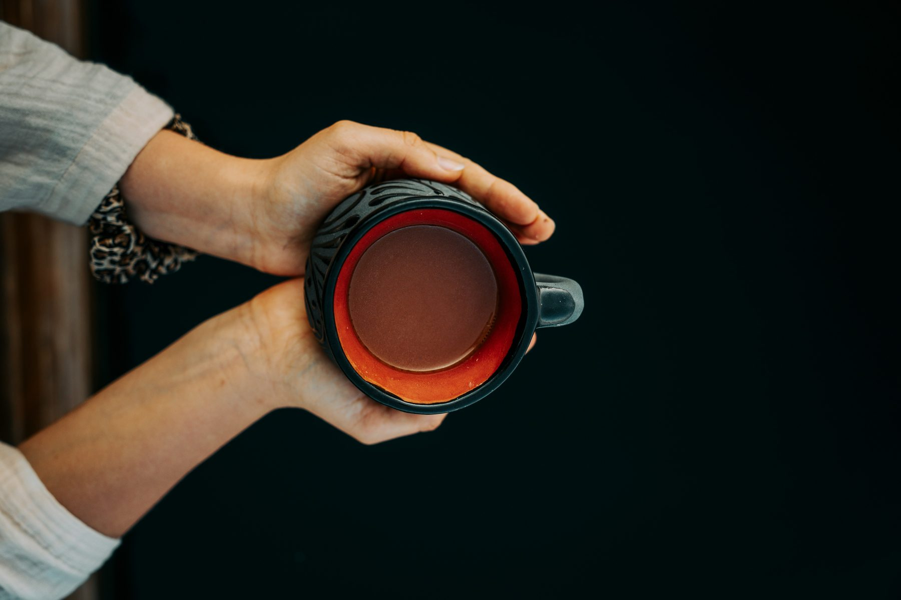
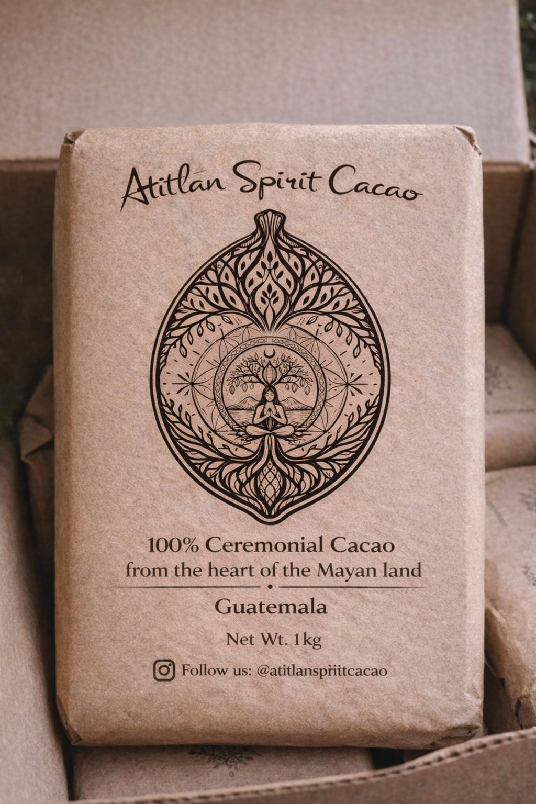
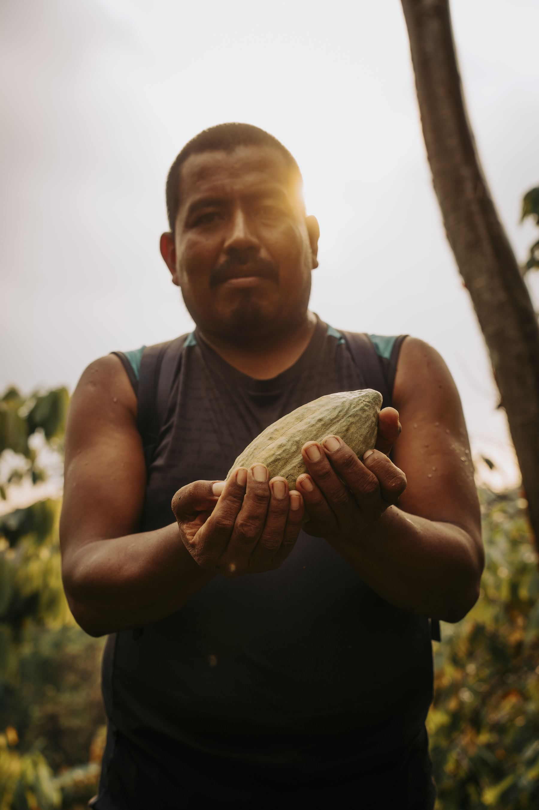

Shop
Shop Ceremonial Cacao
100% pure ceremonial cacao from Guatemalan small-scale family farms. Ethically sourced and lovingly grown in biodiverse forests without the use of pesticides or chemicals.
- 100% Pure Cacao
- Sourced From Small-Scale Farms
- Grown in Cacao Forests
- Directly Sourced & Fairtrade
- Handmade with Love
- Vegan & Gluten-Free

The Cacao
Pure, stone-ground, single origin.
- Single origin, grown in the volcanic highlands of Guatemala
- Hand-harvested and sun-fermented
- Stone-ground, small batch, no additives
- No sugar, dairy, or emulsifiers, ever
- Direct trade with Mayan farming families
Ships from Guatemala. We'll confirm exact shipping cost and delivery time by email before any payment is taken, nothing is charged automatically.
454g Block (1 lb)
1kg Block
Shipping quoted before you pay, nothing is charged automatically.
Our Cacao
About Volcano Spirit Cacao
Our ceremonial cacao comes from Guatemala, where cacao has been cultivated and enjoyed for generations. Grown within thriving forest ecosystems and minimally processed to preserve its natural richness.

Benefits
Why Ceremonial Cacao?
- 100% Pure Cacao
- Sourced from Small-Scale Farms
- Grown in Cacao Forests instead of Monocultures
- Directly Sourced & Fairly Traded
- Handmade with Love
- Vegan & Gluten-Free
- Rich in Flavor and Nutrients
From the Forest to Your Cup
Our cacao is grown in biodiverse forests, alongside other plants and without the use of chemicals. Guatemala provides the perfect climate for cacao to grow, fertile volcanic soil, abundant rainfall, and a tropical climate that lets the trees thrive. The result is cacao that reflects the land it comes from, vibrant, nutrient-rich, and full of flavor.
Shop Cacao
Origin
A Living Tradition
The scientific name of cacao, Theobroma cacao, translates to "Food of the Gods." For thousands of years, the Maya valued cacao as one of nature's most precious gifts, preparing it as a nourishing drink for ceremonies, gatherings, and daily life.
Our cacao comes directly from small-scale family farms where this tradition has been preserved across generations. Through fair partnerships and direct sourcing, every purchase helps support the communities who grow cacao while protecting a living cultural heritage.
FAQ
Your Questions about Ceremonial Cacao, Answered
What is ceremonial cacao and how is it different from regular chocolate?
Ceremonial cacao is 100% pure, minimally processed cacao made by fermenting, sun-drying, and stone-grinding whole cacao beans into a paste, with nothing added and nothing removed. Regular chocolate is heavily processed and typically contains sugar, dairy, and emulsifiers, often with only a small percentage of actual cacao.
Why buy ceremonial cacao from Guatemala?
Guatemala's volcanic highlands provide mineral-rich soil and a climate cacao has grown in for thousands of years. Our cacao is grown by Mayan family farmers in biodiverse forests rather than monocultures, hand-harvested, and traded directly with the families who grow it.
What is ceremonial cacao used for?
Ceremonial cacao is traditionally prepared as a warm drink for ceremony, meditation, and daily ritual. Many people use it to slow down, set an intention, or create a moment of presence, whether alone or shared with others.
What does ceremonial cacao taste like?
Ceremonial cacao is rich, earthy, and intensely chocolatey, with a natural bitterness and fuller body than sweetened chocolate. Because it contains no added sugar, its flavor is closer to a dense, dark drink than to hot cocoa, and many people add a natural sweetener to taste.
What does "ceremonial grade" cacao mean?
"Ceremonial grade" refers to cacao made from whole beans, minimally processed with no added sugar, dairy, or emulsifiers, and prepared with care rather than mass-produced. There's no official legal standard for the term, so sourcing and transparency from the producer matter more than the label itself.
How much ceremonial cacao should I use?
A traditional ceremonial dose is around 35 to 45 grams, roughly one to one and a half tablespoons, per 200ml of hot water. Many people start with a smaller amount, around 20 to 28 grams, to see how their body responds before working up to a full dose.
Is ceremonial cacao the same as raw cacao?
Not exactly. Raw cacao usually refers to unroasted beans processed at low temperatures, while ceremonial cacao specifically describes whole-bean cacao prepared for ritual use, fermented and sun-dried, then stone-ground with nothing added.
Can I drink ceremonial cacao every day?
Many people enjoy ceremonial cacao daily as part of a morning or evening ritual, often in smaller microdose amounts of 10 to 15 grams. As with any cacao product, it naturally contains theobromine and a small amount of caffeine, so it's worth noticing how your body responds.